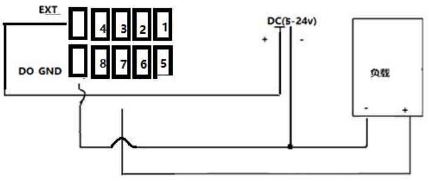
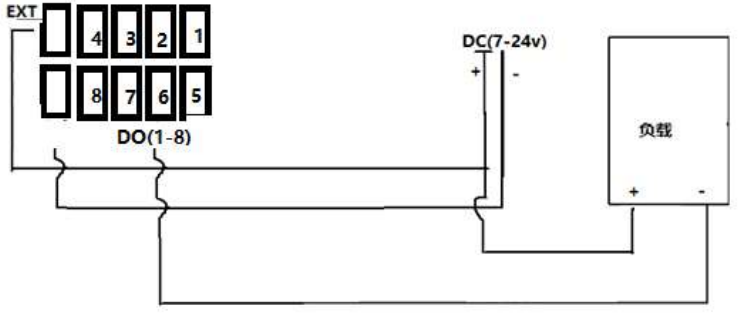

上图显示DO1、2、3、8配置了其输出方式。下面的输入参数的描述以此为例进行说明。
上图显示DO1、2、3、8配置了其输出方式。下面的输入参数的描述以此为例进行说明。DO输出工具目前只能在包含有DIO硬件模块的工控机上可以正常使用。主要用来控制DO输出的触发(生效)状态。 其控制输出方式请查阅主界面设置中的IO管理界面(如果当前工控机不包含DIO硬件，则DIO管理灰显不可用)。
DO输出支持PNP和NPN两种接线方式。PNP指的是高电平有效，NPN指的是低电平有效。客户需要根据DO输出对接设备的接线方式来正确接线。 目前DIO硬件模块默认的接线方式PNP模式，即供电模式。正常已经出厂的接线模式是和现场匹配好的。如果想要在项目中更改接线方式请联系我们。
 DO 接至负载的+，负载的-接至 DO_GND，EXT 接外部电压。 如需接感性负载，请确认有反向泄放二极管，防止反向电动势击穿内部零件。 DO(1-8PIN) 禁止接负载-， 否则过流后主板上的 MOSE 元器件会被断开（击穿）。
 DO 接至负载的-，负载的+接至 EXT，EXT 接外部电压 如需接感性负载，请确认有反向泄放二极管，防止反向电动势击穿内部零件。
工程中使用DIO通信，可以通过DO输出工具来控制输出引脚(1~8)的触发(生效)状态。 DO控制方式主要有5中，无动作、有效(触发)、无效(不触发)、正脉冲、负脉冲。 无动作指不控制当前DO引脚，维持之前的状态。 有效指控制DO进入触发（PNP(高电平有效)输出高电平，NPN(低电平有效)输出低电平）状态。 无效指控制DO进入未触发（PNP(高电平有效)输出低电平，NPN(低电平有效)输出高电平）状态。 正脉冲指从无效到有效(持续一小段时间)再到无效的过程。 负脉冲指从有效到无效(持续一小段时间)再到有效的过程。 DO输出工具可以同时输出多路，并且可以根据工具的输入参数进行不同类型的输出。
在主界面中的IO管理界面中可以设置DO输入不同值对应的输出方式，举例如下图所示：
上图显示DO1、2、3、8配置了其输出方式。下面的输入参数的描述以此为例进行说明。
| 参数名称 | 参数描述 |
|---|---|
| DO1输入 | 外部链接，可以是变量或者其他工具的输出。为true时输出有效（触发），false时输出无效（不触发） |
| DO2输入 | 外部链接，可以是变量或者其他工具的输出。为true时输出正脉冲，false时输出负脉冲 |
| DO3输入 | 外部链接，可以是变量或者其他工具的输出。为true时输出有效（触发），false时输出无效（不触发） |
| DO4~DO7输入 | 外部链接，可以是变量或者其他工具的输出。链接无论是true或false时都不进行任何动作 |
| DO8输入 | 外部链接，可以是变量或者其他工具的输出。链接无论是true或false时都输出有效（触发） |
| 参数名称 | 参数描述 |
|---|---|
| 执行结果 | 工具执行结果。 |
| 执行时间 | 工具执行时间。 |
| DO1~DO8触发状态 | 输出true说明信号处于触发（有效）状态，false说明信号处于未触发（无效）状态 |
| 所有DO触发状态按位和结果 | 按位和指的是其bit0~bit7分别对应DO引脚1~8的触发状态，例如：结果是170代表引脚2、4、6、8处于触发（有效）状态，引脚1、3、5、7代表未触发(无效)状态 |
- 工控机只有包含DIO硬件模块时才能正常执行。
- DO的输出方式是由IO管理界面配置以及输入参数决定的。
无